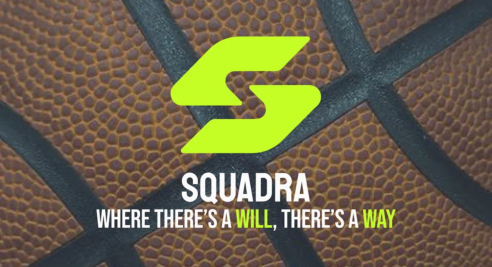
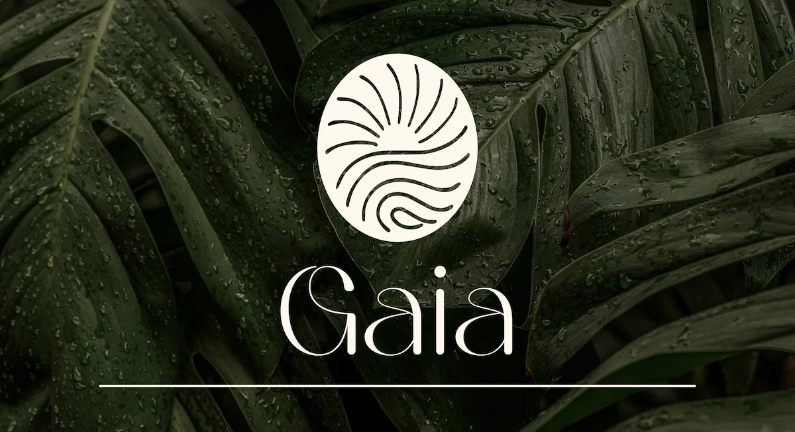
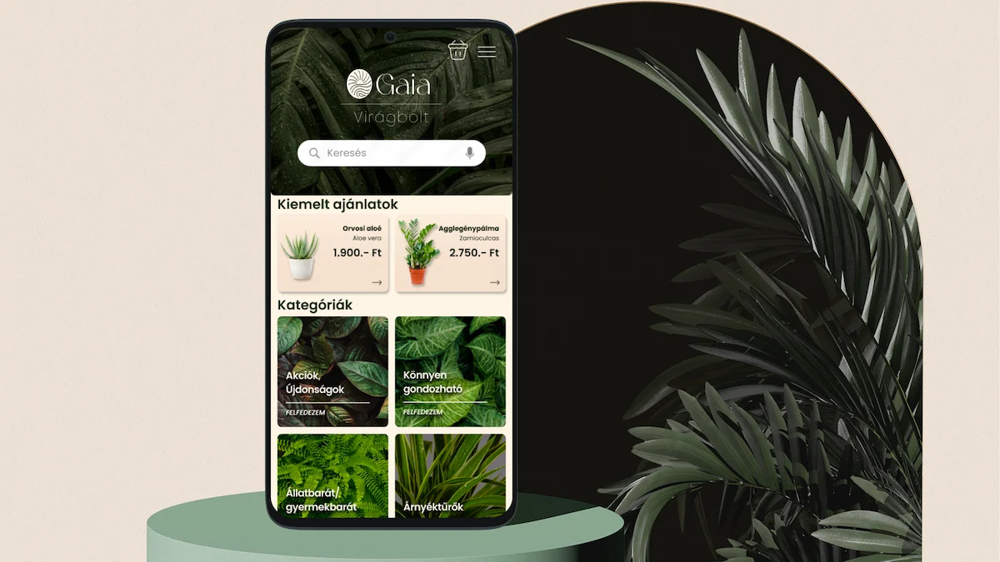
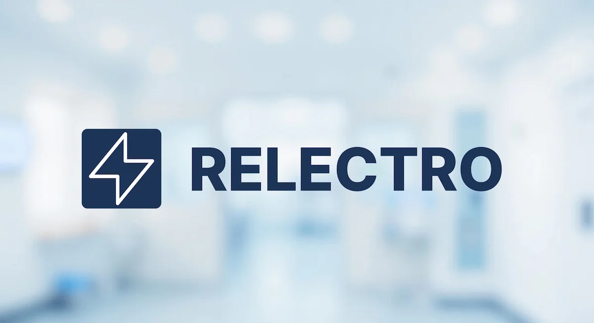
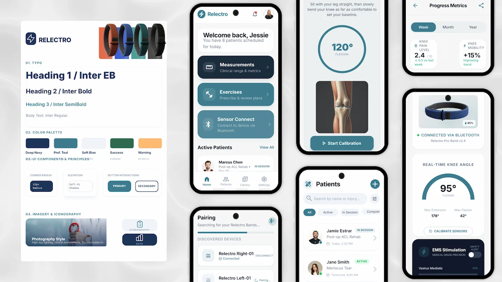

01 / SQUADRA
A platform that helps recreational athletes connect, find teammates or workout buddies, organise games and build their local sports communities.
READ MORE →
A platform that helps recreational athletes connect, find teammates or workout buddies, organise games and build their local sports communities.
READ MORE →

A redesign of a plant webshop with a new brand identity, clearer navigation, better search and filtering and a simpler way to browse and order online.
READ MORE →

A smart knee band for rehabilitation that uses electrostimulation and motion-tracking sensors to give patients and physiotherapists real-time feedback of movement and measurable results.
READ MORE →